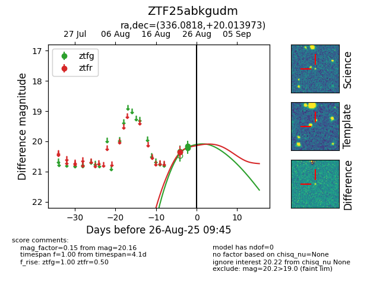

Target ZTF25abkgudm at 2025-08-26 09:45, see:
FINK: fink-portal.org/ZTF25abkgudm
Lasair: lasair-ztf.lsst.ac.uk/objects/ZTF25abkgudm
ALeRCE: alerce.online/object/ZTF25abkgudm
alt names
ZTF25abkgudm (ztf,fink)
coordinates:
equatorial (ra, dec) = (336.0818,+20.01397)
galactic (l, b) = (81.9592,-30.91321)
photometry
last ztfg=20.16, ztfr=20.36
3 ztfg, 1 ztfr detections
